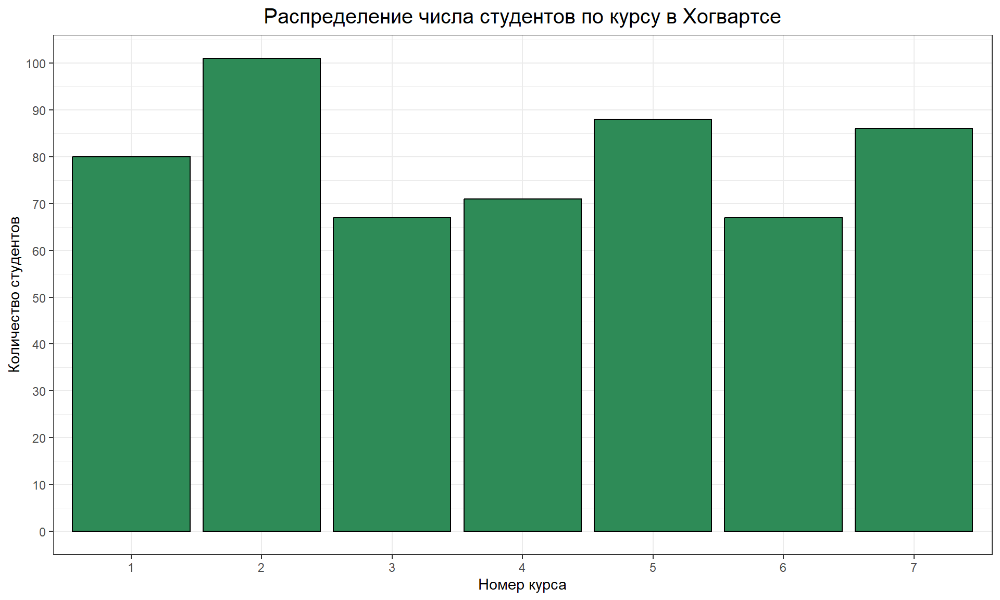
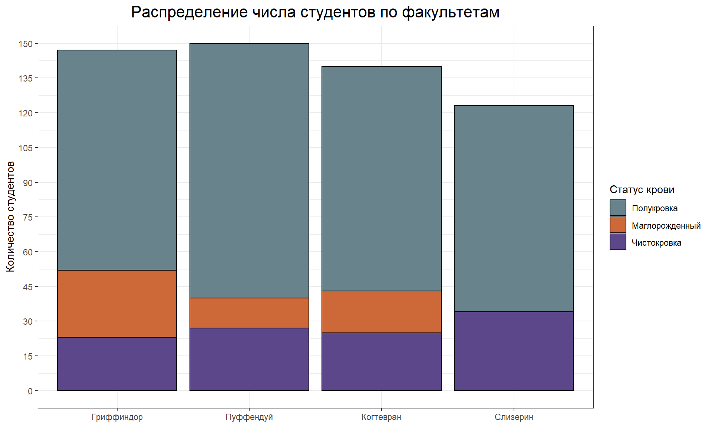
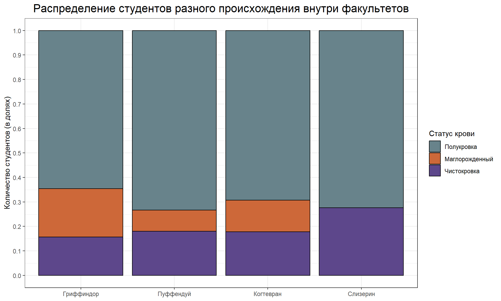
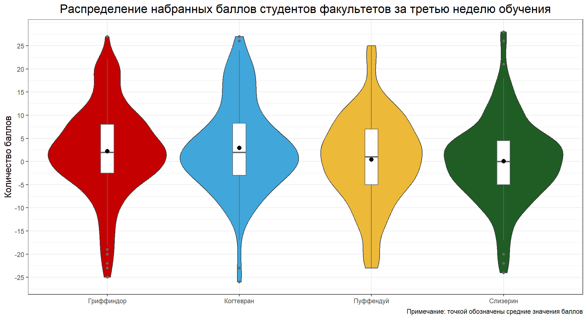
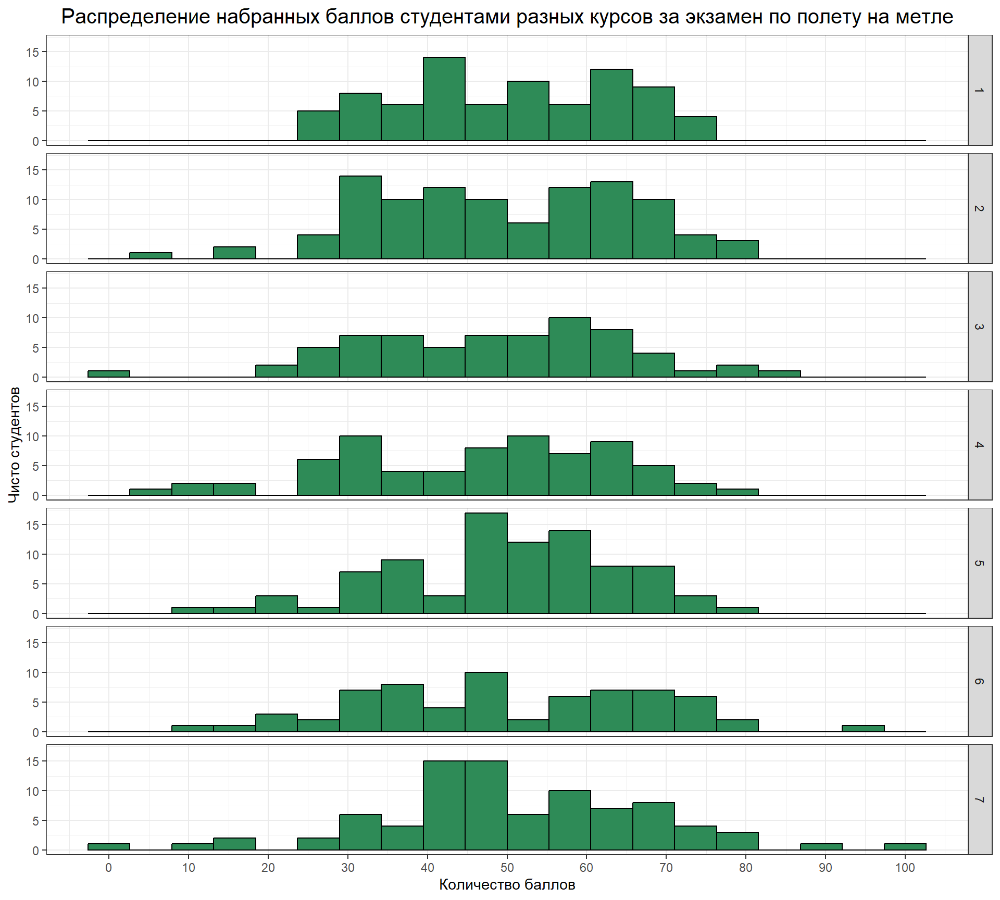
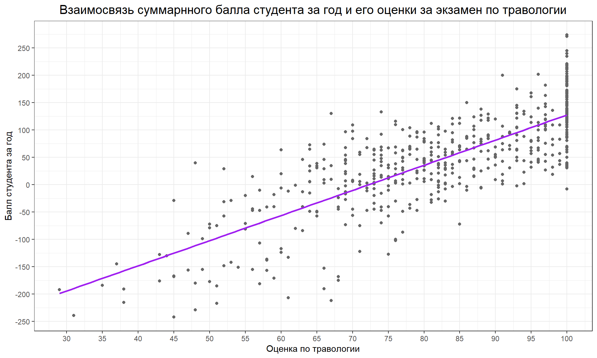
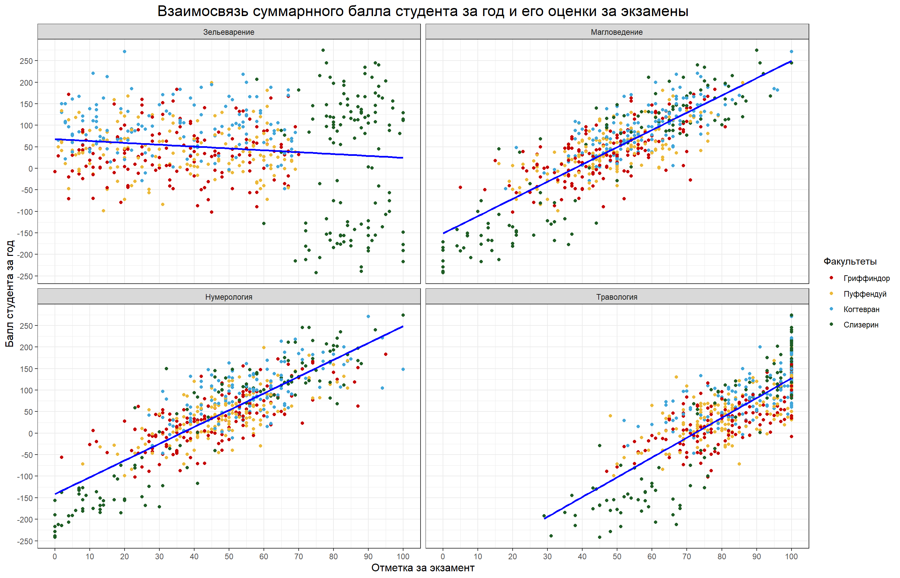

Rows: 560 Columns: 60
── Column specification ────────────────────────────────────────────────────────
Delimiter: ","
chr (4): wandCore, sex, bloodStatus, house
dbl (56): id, course, result, Defence against the dark arts exam, Flying exa...
ℹ Use `spec()` to retrieve the full column specification for this data.
ℹ Specify the column types or set `show_col_types = FALSE` to quiet this message.
#тема ко всему документуtheme_set(theme_bw())#частоиспользуемые вектораhouse_names <-c("Gryffindor"="Гриффиндор","Hufflepuff"="Пуффендуй","Ravenclaw"="Когтевран","Slytherin"="Слизерин")house_colours <-c("Gryffindor"="#C50000","Hufflepuff"="#ECB939","Ravenclaw"="#41A6D9","Slytherin"="#1F5D25")bloodStatus_values <-c( 'half-blood'="lightblue4","muggle-born"="sienna3","pure-blood"="mediumpurple4")bloodStatus_labels <-c('half-blood'="Полукровка","muggle-born"="Маглорожденный","pure-blood"="Чистокровка")
1.
ggplot(hogwarts)+geom_bar(aes(x =as.factor(course)), fill ='seagreen', colour ='black')+labs(title ='Распределение числа студентов по курсу в Хогвартсе',x ='Номер курса',y ='Количество студентов' )+scale_y_continuous(breaks =seq(0,100,10))+theme(plot.title =element_text(hjust =0.5, size =15) )

2.
ggplot(hogwarts)+geom_bar(aes(x =as.factor(house), fill = bloodStatus), colour ='black')+labs(title ='Распределение числа студентов по факультетам',x =NULL,y ='Количество студентов' )+scale_fill_manual(name ='Статус крови',values = bloodStatus_values, labels = bloodStatus_labels )+scale_x_discrete(labels = house_names )+scale_y_continuous(breaks =seq(0,150,15))+theme(plot.title =element_text(hjust =0.5, size =16) )

bloodStatus_hogwarts <-ggplot(hogwarts)+geom_bar(aes(x =as.factor(house), fill = bloodStatus), colour ='black', position ='fill', )+labs(title ='Распределение студентов разного происхождения внутри факультетов',x =NULL,y ='Количество студентов (в долях)' )+scale_fill_manual(name ='Статус крови',values = bloodStatus_values, labels = bloodStatus_labels )+scale_x_discrete(labels = house_names )+scale_y_continuous(breaks =seq(0,1,0.1))+theme(plot.title =element_text(hjust =0.5, size =16) )bloodStatus_hogwarts

Доли волшебников разного происхождения на каждом из факультетов, за некотрым исключением, примерно равны. Полукровки составляют наибольшую долю волшебников на каждом из факультетов (от 65%). Чистокровки также есть на кадом из факультетов, доля их числа составляет примерно 15 и 25% (Гриффиндор и Слизерин соответственно). Маглорожденные волшебники не учатся на Слизерине, доли их числа составляют примерно 8 и 20% (Пуффендуй и Гриффиндор соответсвенно).
3.
hogwarst_week3 <- hogwarts %>%group_by(house) %>%arrange(week_3, result, house) %>%summarise(meadian_w3 =median(week_3,na.rm = T),mean_w3 =mean(week_3,na.rm = T) ) hogwarts_house_result <- hogwarts %>%ggplot()+#здесь при построении графика сразу упорядочиваем в порядке убывания медианного балла geom_violin(aes(x =fct_reorder(house, week_3, .desc = T), y = week_3, fill = house))+geom_boxplot(aes(x = house, y = week_3), width =0.1, colour ='grey40')+geom_point(data=hogwarst_week3, aes(x=house, y = mean_w3), shape =16, size =2.5)+labs(title ='Распределение набранных баллов студентов факультетов за третью неделю обучения',caption ='Примечание: точкой обозначены средние значения баллов',x =NULL,y ='Количество баллов' )+scale_fill_manual(values = house_colours)+scale_x_discrete(labels = house_names)+scale_y_continuous(breaks =seq(-25,25,5))+theme(plot.title =element_text(hjust =0.5, size =16),axis.title =element_text(size =12.5),legend.position ='none' )hogwarts_house_result

4.
hogwarts %>%ggplot()+geom_histogram(aes(x =`Flying exam`), fill ='seagreen', colour ='black', bins =20)+facet_grid(as.factor(course)~.)+labs(title ='Распределение набранных баллов студентами разных курсов за экзамен по полету на метле',x ='Количество баллов',y ='Чисто студентов' )+scale_x_continuous(breaks =seq(0,100,10))+theme(plot.title =element_text(hjust =0.5, size =15),axis.title =element_text(size =11) )

5.
ggplot(hogwarts, aes(y = result, x =`Herbology exam`))+geom_point(shape =21, fill ='grey40', colour ='grey40')+scale_x_continuous(breaks =seq(0, 100, 5))+scale_y_continuous(breaks =seq(-300,300,50))+labs(title ='Взаимосвязь суммарнного балла студента за год и его оценки за экзамен по травологии',x ='Оценка по травологии',y ='Балл студента за год')+geom_smooth(method ='lm', se = F, colour ='purple')+theme(plot.title =element_text(hjust =0.5, size =15),axis.title =element_text(size =11) )
`geom_smooth()` using formula = 'y ~ x'

Количество набранных студентом баллов за год и его оценка по травологии положительно коррелируют, т.е. чем выше балл, тем выше оценка. Большая часть студентов получила суммарный балл >-50 и оценку по травологии >65. При этом наблюдаются выбросы, т.е. есть студенты, получившие высокую отметку за экзамен (>65) и низкий суммарный балл (<-50).
6.
hogwarts %>%select(id, house, result, `Herbology exam`, `Muggle studies exam`, `Arithmancy exam`, `Potions exam`) %>%rename('Травология'=`Herbology exam`, 'Магловедение'=`Muggle studies exam`, 'Нумерология'=`Arithmancy exam`, 'Зельеварение'=`Potions exam`) %>%pivot_longer(c('Травология', 'Магловедение', 'Нумерология', 'Зельеварение'), names_to ='exams', values_to ='score') %>%ggplot(aes(y = result, x = score))+geom_point(aes(colour = house)) +facet_wrap(.~exams, ncol =2)+labs(title ='Взаимосвязь суммарнного балла студента за год и его оценки за экзамены',x ='Отметка за экзамент',y ='Балл студента за год')+scale_colour_manual( name ='Факультеты',values = house_colours,labels = house_names) +scale_x_continuous(breaks =seq(0,100,10))+scale_y_continuous(breaks =seq(-250,300,50))+geom_smooth(method ='lm', se = F, colour ='blue')+theme(plot.title =element_text(hjust =0.5, size =17),axis.title =element_text(size =12) )
`geom_smooth()` using formula = 'y ~ x'

Для всех экзаменах, кроме зельеварения, можно говорить о положительной корреляции суммарного балла студента за год и его отметки за экзамен. Отметка по экзамену по зельеварению с суммарным баллом не коррелирует. Отметки студентов разных факультетов за экзамены распредлены равномерно, за исключением экзамена по зельеварению, где отметку >70 получили только студенты Слизерина (практически все). При этом самые низкие отметки по остальным экзаменом принадлежат примущественно студентам этого факультета <30 по магловедению, <20 по нумерологии, <60 по травологии. Лучше всего студенты всех факультетов сдавали травологию, никто не получил отмеку, ниже примерно 30 баллов.
7.
hogwarts %>%select(id, house, result, `Herbology exam`, `Muggle studies exam`, `Arithmancy exam`, `Potions exam`) %>%rename('Травология'=`Herbology exam`, 'Магловедение'=`Muggle studies exam`, 'Нумерология'=`Arithmancy exam`, 'Зельеварение'=`Potions exam`) %>%pivot_longer(c('Травология', 'Магловедение', 'Нумерология', 'Зельеварение'), names_to ='exams', values_to ='score') %>%ggplot(aes(y = result, x = score, colour = house))+geom_point() +facet_wrap(.~exams, ncol =2)+geom_smooth(method ='lm', se = F)+labs(title ='Взаимосвязь суммарнного балла студентов разных факультетов за год и их оценки за экзамены',x ='Отметка за экзамент',y ='Балл студента за год')+scale_colour_manual( name ='Факультеты',values = house_colours,labels = house_names) +scale_x_continuous(breaks =seq(0,100,10))+scale_y_continuous(breaks =seq(-250,300,50))+theme(plot.title =element_text(hjust =0.5, size =17),axis.title =element_text(size =12) )
`geom_smooth()` using formula = 'y ~ x'
Группировка линий трендов по факультетам позволила рассмотреть дополнительные характеристики взаимосвязей годового балла студента и его отметкой за 4 представленных экзамена. А именно: 1) взаимосвязь суммарного балла студентов всех факультетов на экзменах, исключая Зельеварение, есть и является положительной; 2) при этом, угол наклона линии тренда факультета Слизерина для всех экзменов, исключая Зельеварение, наибольший, что говорит о сравнительно бOльшей взаимосвязи суммарнного балла и соответсвующего экзамена; 3) углы наклонов линий трендов (и соответсвенно взаимосвязи) остальных трех факультетов для всех экзменов, исключая Зельеварение, схожи. При этом каждый отдельный студенты Когтеврана набрал за год бОльшее количество баллов в сравнении с отдельными студентами Гриффиндора и Пуффендуя; 4) ни для одного из факультетов не обнаружена корреляция суммарного балла и отметки за экзамен.
8.
hogwarts_2exams <- hogwarts %>%rename('Экзамен по защите от темных искусств'=`Defence against the dark arts exam`, 'Экзамен по прорицанию'=`Divinations exam`) %>%pivot_longer(c('Экзамен по защите от темных искусств', 'Экзамен по прорицанию'), values_to ='score', names_to ='exams')
hist_darkdef_diviation <- hogwarts_2exams %>%ggplot(aes(x = score, fill = exams))+geom_histogram(alpha =0.5, colour ='black', bins =20)+labs(x ='Балл за экзамен',y ='Количество учеников' )+scale_x_continuous(breaks =seq(0,100,10))+scale_y_continuous(breaks =seq(0,150,20))+scale_fill_manual(name =NULL,values =c('Экзамен по защите от темных искусств'='mediumorchid4','Экзамен по прорицанию'='peru') )+theme(plot.title =element_text(hjust =0.5),legend.text =element_text(size =15),axis.title =element_text(size =17),axis.text.y =element_text(size =11),axis.text.x =element_text(size =11),legend.position ='bottom',legend.justification ='centre',legend.direction ='horizontal' )
boxplot_darkdef_diviation <- hogwarts_2exams %>%ggplot()+geom_boxplot(aes(y = score, x = exams, fill = exams), alpha =0.7)+labs(x =NULL,y ='Балл за экзамен' )+scale_y_continuous(breaks =seq(0,100,10))+scale_fill_manual(values =c('Экзамен по защите от темных искусств'='mediumorchid4','Экзамен по прорицанию'='peru') )+theme(plot.title =element_text(hjust =0.5 ),legend.position ='none',axis.title =element_text(size =17),axis.text.y =element_text(size =11),#axis.text.x = element_text(size = 15),#уберем, тк в легенде четку обозначена цветовая группировкаaxis.text.x =element_blank() )
jitter_darkdef_diviation <- hogwarts_2exams %>%ggplot()+geom_jitter(aes(x = exams, y = score, colour = exams))+labs(x =NULL,y ='Балл за экзамен' )+scale_y_continuous(breaks =seq(0,100,10))+scale_color_manual(values =c('Экзамен по защите от темных искусств'='mediumorchid4','Экзамен по прорицанию'='peru') )+theme(plot.title =element_text(hjust =0.5 ),legend.position ='none',axis.title =element_text(size =17),axis.text.y =element_text(size =11),#axis.text.x = element_text(size = 15),#уберем, тк в легенде четку обозначена цветовая группировкаaxis.text.x =element_blank() )
(boxplot_darkdef_diviation | jitter_darkdef_diviation)/hist_darkdef_diviation+plot_annotation(title ="Разпределение отметок по экзаменам по прорицанию и защите от темных искусств",theme =theme(plot.title =element_text(hjust =0.5, size =30)))
Распредления баллов за два экзамена различаются. В счучае экзамена по защите от темных исскуств студенты получили отметки во всем диапазоне 0-100, при этом чаще получали отметки в диапазоне 0-40, реже - 40-60. Медианное значение отметки по этому экзамену - 50. В случае экзамена по прорицанию отметки получали в диапазоне 0-60. Немногие студенты получили балл >40. Медианное значени отметки по этому экзамену ~13.
9.
hogwarts_potionsmean_bloodstatus <- hogwarts %>%mutate(bloodStatus =factor(bloodStatus, level =c ('muggle-born', 'half-blood', 'pure-blood'))) %>%group_by(bloodStatus) %>%summarise(`Среднее по зельеварению`=mean(`Potions exam`))hogwarts %>%#упорядочиваем переменную происхожденияmutate(bloodStatus =factor(bloodStatus, level =c ('muggle-born', 'half-blood', 'pure-blood'))) %>%ggplot(aes(x = bloodStatus, y =`Potions exam`))+geom_jitter(size =0.7, shape =21, colour ='grey40', fill ='grey40')+geom_boxplot(aes(fill = bloodStatus),colour ='grey40', width =0.1, alpha =0.7)+geom_point(data = hogwarts_potionsmean_bloodstatus, aes(x=bloodStatus, y =`Среднее по зельеварению`), size =4, shape =23, fill ='brown3', colour ='grey40')+labs(title ='Распределение баллов по зельеварению у студентов разного происхождения',x =NULL,y ='Балл за экзамен',caption ='Примечание: точкой обозначены средние значения баллов' )+scale_fill_manual(values = bloodStatus_values)+scale_x_discrete(labels = bloodStatus_labels)+scale_y_continuous(breaks =seq(0,100,10))+theme(plot.title =element_text(hjust =0.5 ),axis.text.x =element_text(color ="black", size =11),axis.text.y =element_text(color ="black", size =10),axis.title =element_text(size =13),legend.position ='none',plot.caption =element_text(size =8, colour ='grey25') )
Полукровки и чистокровки получали баллы по экзамену по зельеварению во всем диапазоне значений (0-100), маглорожденные волшебники не получили оченок выше 70 баллов и имеют наименьший средний балл по экзамену. При этом разрыв баллов между группами небольшой, ~20 баллов. Медианные значения примерно равны средним.
Чтобы найти объяcнения полученным результатам, обратимся к графикам распределения баллов по зельеварению у студентов разных факультетов и распределению студентов разного происхождения внутри факультетов. Из первого графика мы видим, что отметки по зельеварению >70 получили только студенты слизерина, при этом, как видно на втором графике, маглорожденные студенты не учатся на этом факультете. Т.е. и значения баллов >70 полукровок и чистокровок соответсвуют только студентам слизерина. Это объясняет отсутвие баллов >70 только у маглорожденных студентов.
Распределение cуммарных баллов за год у студентов разного происхождления показывает, маглорожденные студенты не учатся сильно хуже остальных, средние глобально не различаются, маглорожденные не получили самых высоких баллов, но и не получали баллов ниже -100. Студенты слизерина же не отличаются исключительно высокими баллами (см. Распределение cуммарных баллов за год у студентов разных факультетов), их студенты скорее разделились на две группы: те, кто получил >50 и <-50 баллов (если смотреть на график задания 12 Распределение числа баллов у студентов различных факультетов Хогвартса в 2024-2025 учебном году, то видно, что это группы, различные по полу). Т.е. студенты слизерина не преуспевающие в школе, а маглорожденные студенты не самые отстающие.
Графики ‘Распределения баллов по экзаменам у маглорожденных волшебников и студентов Слизерина’ и ‘Распределения баллов по экзаменам у студентов разных факультетов’ показывают, что такие значительные различия баллов между студентами факультета Слизерина и маглорожденными студентами и студентами разных факультетов наблюдаются только для экзамена по зельеварению.
Таким образом можно сделать вывод, что экзамен по зельеварению оценивался предвзято, в пользу студентов Слизерина.
hogwarts_potionsmean_house <- hogwarts %>%group_by(house) %>%summarise(`Среднее по зельеварению`=mean(`Potions exam`))Hogwarts_potion_house <- hogwarts %>%ggplot(aes(x = house, y =`Potions exam`))+geom_jitter(size =0.7, shape =21, colour ='grey40', fill ='grey40')+geom_boxplot(aes(fill = house),colour ='grey40', width =0.1, alpha =0.7)+geom_point(data = hogwarts_potionsmean_house, aes(x=house, y =`Среднее по зельеварению`), size =4, shape =23, fill ='grey25', colour ='grey40')+labs(title ='Распределение баллов по зельеварению у студентов разных факультетов',x =NULL,y ='Балл за экзамен',caption ='Примечание: точкой обозначены средние значения баллов' )+scale_fill_manual(values = house_colours)+scale_x_discrete(labels = house_names)+scale_y_continuous(breaks =seq(0,100,10))+theme(plot.title =element_text(hjust =0.5, size =19),axis.text.x =element_text(color ="black", size =15),axis.text.y =element_text(color ="black", size =13),axis.title =element_text(size =15),legend.position ='none',plot.caption =element_text(size =11, colour ='grey25') )bloodStatus_hogwarts2 <-ggplot(hogwarts)+geom_bar(aes(x =as.factor(house), fill = bloodStatus), colour ='black', position ='fill', )+labs(title ='Распределение студентов разного происхождения внутри факультетов',x =NULL,y ='Количество студентов (в долях)' )+scale_fill_manual(name ='Статус крови',values = bloodStatus_values, labels = bloodStatus_labels )+scale_x_discrete(labels = house_names )+scale_y_continuous(breaks =seq(0,1,0.1))+theme(plot.title =element_text(hjust =0.5, size =19),axis.text.x =element_text(color ="black", size =15),axis.text.y =element_text(color ="black", size =13),axis.title =element_text(size =15),legend.text =element_text(size =13),legend.title =element_text(size =13) )(Hogwarts_potion_house|bloodStatus_hogwarts2)
hogwarts_resultmean_bloodStatus <- hogwarts %>%group_by(bloodStatus) %>%summarise(`Средний балл`=mean(result))Hogwarts_result_bloodstatus <- hogwarts %>%ggplot(aes(x = bloodStatus, y = result))+geom_jitter(size =0.7, shape =21, colour ='grey40', fill ='grey40')+geom_boxplot(aes(fill = bloodStatus), colour ='grey40', width =0.1, alpha =0.7)+geom_point(data = hogwarts_resultmean_bloodStatus, aes(x = bloodStatus, y =`Средний балл`), size =4, shape =23, fill ='grey25', colour ='grey40')+labs(title ='Распределение cуммарных баллов за год у студентов разного происхождления',x =NULL,y ='Суммарный балл за год',caption ='Примечание: точкой обозначены средние значения баллов' )+scale_fill_manual(values = bloodStatus_values)+scale_x_discrete(labels = bloodStatus_labels)+scale_y_continuous(breaks =seq(-250,300,50))+theme(plot.title =element_text(hjust =0.5, size =19 ),axis.text.x =element_text(color ="black", size =15),axis.text.y =element_text(color ="black", size =13),axis.title =element_text(size =15),legend.position ='none',plot.caption =element_text(size =11, colour ='grey25'), )hogwarts_resultmean_house <- hogwarts %>%group_by(house) %>%summarise(`Средний балл`=mean(result))Hogwarts_result_house <- hogwarts %>%ggplot(aes(x = house, y = result))+geom_jitter(size =0.7, shape =21, colour ='grey40', fill ='grey40')+geom_boxplot(aes(fill = house), colour ='grey40', width =0.1, alpha =0.7)+geom_point(data = hogwarts_resultmean_house, aes(x = house, y =`Средний балл`), size =4, shape =23, fill ='grey25', colour ='grey40')+labs(title ='Распределение cуммарных баллов за год у студентов разных факультетов',x =NULL,y ='Суммарный балл за год',caption ='Примечание: точкой обозначены средние значения баллов' )+scale_fill_manual(values = house_colours)+scale_x_discrete(labels = house_names)+scale_y_continuous(breaks =seq(-250,300,50))+theme(plot.title =element_text(hjust =0.5, size =19 ),axis.text.x =element_text(color ="black", size =15),axis.text.y =element_text(color ="black", size =13),axis.title =element_text(size =15),legend.position ='none',plot.caption =element_text(size =11, colour ='grey25') )Hogwarts_result_bloodstatus | Hogwarts_result_house
Hogwarts_examsall_blood <- hogwarts %>%#фильтруем маглорожденных волшебников и чистокровных волшебников, учащихся слизаринаfilter(bloodStatus =='muggle-born'| house =='Slytherin') %>%select(id, bloodStatus, house, result, `Herbology exam`, `Muggle studies exam`, `Arithmancy exam`, `Potions exam`, `Defence against the dark arts exam`, `Flying exam`, `Astronomy exam`, `Divinations exam`, `Charms exam`, `History of magic exam`, `Study of ancient runes exam`, `Care of magical creatures exam`) %>%rename('Травология'=`Herbology exam`, 'Магловедение'=`Muggle studies exam`, 'Нумерология'=`Arithmancy exam`, 'Зельеварение'=`Potions exam`, 'Защита от темных искусств'=`Defence against the dark arts exam`, 'Полет на метле'=`Flying exam`, 'Астрономия'=`Astronomy exam`, 'Гадание'=`Divinations exam`, 'Заклинания'=`Charms exam`, 'История магии'=`History of magic exam`, 'Древние руны'=`Study of ancient runes exam`, 'Магические существа'=`Care of magical creatures exam`) %>%pivot_longer(c('Травология', 'Магловедение', 'Нумерология', 'Зельеварение','Защита от темных искусств', 'Полет на метле', 'Астрономия', 'Гадание', 'Заклинания', 'История магии', 'Древние руны', 'Магические существа'), names_to ='exams', values_to ='score') %>%ggplot(aes(y = exams, x = score, fill = bloodStatus))+#geom_jitter(size = 0.7, shape = 21, colour = 'grey40', fill = 'grey40')+geom_boxplot(colour ='grey40', width =0.3, alpha =0.7)+labs(title ='Распределение баллов по экзаменам у маглорожденных волшебников и студентов Слизерина',y =NULL,x ='Балл за экзамен' )+scale_fill_manual( name =NULL,labels = bloodStatus_labels,values = bloodStatus_values)+scale_x_continuous(breaks =seq(0,100,10))+theme(plot.title =element_text(hjust =0.5, size =18, face ="bold" ),axis.text.y =element_text(color ="black", size =15),axis.text.x =element_text(color ="black", size =15),axis.title =element_text(size =18),plot.caption =element_text(size =8, colour ='grey25'),legend.position ='bottom',legend.justification ='centre',legend.direction ='horizontal',legend.text =element_text(size =15),legend.title =element_text(size =15) )Hogwarts_examsall_house <- hogwarts %>%select(id, bloodStatus, house, result, `Herbology exam`, `Muggle studies exam`, `Arithmancy exam`, `Potions exam`, `Defence against the dark arts exam`, `Flying exam`, `Astronomy exam`, `Divinations exam`, `Charms exam`, `History of magic exam`, `Study of ancient runes exam`, `Care of magical creatures exam`) %>%rename('Травология'=`Herbology exam`, 'Магловедение'=`Muggle studies exam`, 'Нумерология'=`Arithmancy exam`, 'Зельеварение'=`Potions exam`, 'Защита от темных искусств'=`Defence against the dark arts exam`, 'Полет на метле'=`Flying exam`, 'Астрономия'=`Astronomy exam`, 'Гадание'=`Divinations exam`, 'Заклинания'=`Charms exam`, 'История магии'=`History of magic exam`, 'Древние руны'=`Study of ancient runes exam`, 'Магические существа'=`Care of magical creatures exam`) %>%pivot_longer(c('Травология', 'Магловедение', 'Нумерология', 'Зельеварение','Защита от темных искусств', 'Полет на метле', 'Астрономия', 'Гадание', 'Заклинания', 'История магии', 'Древние руны', 'Магические существа'), names_to ='exams', values_to ='score') %>%ggplot(aes(y = exams, x = score, fill = house))+#geom_jitter(size = 0.7, shape = 21, colour = 'grey40', fill = 'grey40')+geom_boxplot(colour ='grey40', width =0.3, alpha =0.7)+labs(title ='Распределение баллов по экзаменам у студентов разных факультетов',y =NULL,x ='Балл за экзамен' )+scale_fill_manual( name =NULL,labels = house_names,values = house_colours)+scale_x_continuous(breaks =seq(0,100,10))+theme(plot.title =element_text(hjust =0.5, size =20, face ="bold" ),axis.text.y =element_blank(),axis.text.x =element_text(color ="black", size =18),axis.title =element_text(size =18),plot.caption =element_text(size =8, colour ='grey25'),legend.position ='bottom',legend.justification ='centre',legend.direction ='horizontal',legend.text =element_text(size =15),legend.title =element_text(size =15) )Hogwarts_examsall_blood|Hogwarts_examsall_house
10.
#исходный графикhogwarts %>%ggplot()+geom_point(aes(x =`Charms exam`, y =`Study of ancient runes exam`), shape =21, fill ='darkviolet', colour ='darkviolet')+labs(title ='Взаимосвязь баллов за экзаменов по заклинаниям и по древним рунам',x ='Отметка за экзамен по заклинаниям',y ='Отметка за экзамен по древним рунам')+scale_y_continuous(breaks =seq(0,100,10))+scale_x_continuous(breaks =seq(0,100,10))+theme(plot.title =element_text(hjust =0.5, size =15),axis.title =element_text(size =12) )
#смотрим подсказкуpodkazka <-read.csv("data/podskazka.csv")podkazka %>%ggplot()+geom_point(aes(x = y, y = x))+scale_y_continuous(limits =c(200, 500))
#решение №1, использование прозрачности точек#таким образом мы видим, что в метах бОльшей плотности точки накладываются друг на друга и выглядят темнееhogwarts %>%ggplot()+geom_point(aes(x =`Charms exam`, y =`Study of ancient runes exam`), alpha =0.3, shape =21, fill ='darkviolet', colour ='darkviolet')+labs(title ='Взаимосвязь баллов за экзаменов по заклинаниям и по древним рунам',x ='Отметка за экзамен по заклинаниям',y ='Отметка за экзамен по древним рунам')+scale_y_continuous(breaks =seq(0,100,10))+scale_x_continuous(breaks =seq(0,100,10))+theme(plot.title =element_text(hjust =0.5, size =15),axis.title =element_text(size =12) )
#решение №2, сочетания прозрачности и position = position_jitter()#position_jitter вносит некотрый шум на точки, что позволяет из разделить#также в областях большей платноси видим более темные точкиhogwarts %>%ggplot()+geom_point(aes(x =`Charms exam`, y =`Study of ancient runes exam`), position =position_jitter(), alpha =0.3, shape =21, fill ='darkviolet', colour ='darkviolet')+labs(title ='Взаимосвязь баллов за экзаменов по заклинаниям и по древним рунам',x ='Отметка за экзамен по заклинаниям',y ='Отметка за экзамен по древним рунам')+scale_y_continuous(breaks =seq(0,100,10))+scale_x_continuous(breaks =seq(0,100,10))+theme(plot.title =element_text(hjust =0.5, size =15),axis.title =element_text(size =12) )
#решение №3, сочетания прозрачности, разделения на группы и position = position_jitterdodge() #в отличе от position = position_jitter, этот вариант дополнительно разводит точки#разделение на группы и использование контрасных цветов позволяет в области оверплоттинга разделять вищуально больше точекhogwarts %>%ggplot(aes(x =`Charms exam`, y =`Study of ancient runes exam`))+geom_point(aes(colour = sex), position =position_jitterdodge(), alpha =0.3, size =1.5)+labs(title ='Взаимосвязь баллов за экзаменов по заклинаниям и по древним рунам',x ='Отметка за экзамен по заклинаниям',y ='Отметка за экзамен по древним рунам')+scale_colour_manual(name =NULL,values =c(female ='tan2',male ='dodgerblue'),labels =c(male ='мальчики', female ='девочки') )+scale_y_continuous(breaks =seq(0,100,10))+scale_x_continuous(breaks =seq(0,100,10))+theme(plot.title =element_text(hjust =0.5, size =15),axis.title =element_text(size =12) )
first_30_students %>%mutate(id =as.factor(id)) %>%ggplot(aes(x = week_number, y = score, group = id))+geom_line(linewidth =0.3)+gghighlight(house =='Ravenclaw', label_key = bloodStatus, unhighlighted_params =list(colour ='skyblue', linewidth =0.3))+labs(title ='Изменение баллов первых 30 студентов в течение 40 недель',x ='Номер недели',y ='Балл студента')+scale_x_continuous(breaks =seq(0,40,5))+scale_y_continuous(breaks =seq(-50,50,10))+theme(plot.title =element_text(hjust =0.5, size =25),axis.title =element_text(size =18),axis.text.x =element_text(size =13),axis.text.y =element_text(size =13), )
Warning: Tried to calculate with group_by(), but the calculation failed.
Falling back to ungrouped filter operation...
12.
#датафрейм для нанесения на график точек, соответсвующим средним значениямhouse_mean_result <- hogwarts %>%group_by(house) %>%summarise(`Средние по факультетам`=mean(result)) %>%ungroup()hogwarts %>%ggplot()+#построение основного графикаgeom_violin(aes(x = house, y = result, fill = house))+facet_grid(.~sex, , labeller =labeller(sex =c('male'='Мальчики', 'female'='Девочки')))+#наслаиваем боксплотgeom_boxplot(aes(x = house, y = result), width =0.1, colour ='grey40')+#наслаиваем точки, соответсвующие средним значениям + редактируем их формы и цветаgeom_point(data = house_mean_result, aes(y =`Средние по факультетам`, x = house), shape =23, size =5, fill ='firebrick4', colour ='black', stroke =1.5)+#настройка заголовков и подписейlabs( title ='Баллы студентов Хогвартса',subtitle ='Распределение числа баллов у студентов различных факультетов Хогвартса в 2024-2025 учебном году',caption ='Источник: нездоровая фантазия автора лекции',y ='Количество очков',x =NULL )+#настройка легендыscale_fill_manual(name ='Факульетет',values = house_colours,labels = house_names )+scale_y_continuous(breaks =seq(-250,250,50))+#наслаиваем линию geom_hline(yintercept =0, linetype='dashed', colour ='pink', linewidth =1)+#рисуем стрелочкуannotate(geom ='curve', x =3.8, xend =3.9, y =-50, yend =10, arrow=arrow(type ='closed'), curvature =-0.5)+theme(#настраиваем параметры легендыlegend.text =element_text(face ="italic", size =13),legend.position ='inside',legend.justification =c('centre', 'bottom'),#задаем один шрифт на весь текст на графике, но у меня Times New Roman не работает почему-то :)text =element_text(family ="serif"),#настраиваем параметры заголовков и подписейplot.title =element_text(hjust =0.5 ),plot.subtitle =element_text(hjust =0.5, colour ='sienna4'),plot.caption =element_text(size =11),#настраиваем цвет и размер текста значений на оси уaxis.text.y =element_text(color ="black", size =10),#удяляем подпись оси хaxis.text.x =element_blank(),#настраиваем размер подписи оси у и хaxis.title =element_text(size =15),#убираем все линии с графикаpanel.grid =element_blank() )
График описывает распределение баллов студентов-мальчиков и студентов-девочек разных факультетов.
Большинство студентов Гриффиндора мужского пола получили отметки в диапазоне -100-170 баллов с пиком в районе среденего балла этого факультета (~25 баллов). Девочки имеют примерно такой же диапазон отметок, но с более пологим их распределением. Студенты-мальчики факультета Пуффендуй имеет похожее распредлеение со студентами Гриффиндора мужского пола, у девочек распределение чуть больше, в диапазоне -70-200 баллов, с большим пиком в районе среднего балла этого факультета (~50 баллом), и небольшим пиком в районе ~125 баллов. В целом можно говорить о схожести распределений баллов студентов этих двух факультетов.
Студенты мужского и женского пола факультета Когтевран получили баллы выше предыдущих двух факультетов. Распределение их баллов немного разнится с диапазоном -25-270 и пологим распредлением для девочек и диапазоном -50-220 и пиком в районе среднего балла этого факультета (~100) для мальчиков.
Распределения баллов у студентов разного пола факультета Слизерина заметно различаются. В то время, как средние остальных факультетов примерно совпадали с медианами, в этом случае эти параметры принимают два разных значения. Девушки получили самые высоки баллы среди остальных групп. Медиана их баллов ~125 баллов (за ними следуют Когтевран ~100), распределение в диапазоне 50-225 баллов с пиком в районе 120 баллов. Парни отличаются наименьшими баллами среди остальных групп. Медиана их баллов ~150 баллов (следущие по возрастанию занчения у Гриффиндора и Пуффендуя ~40). Распределение в диапазоне -240-0 баллов с пиком в районе -150 баллов.
Таким образом наилучшую успеваимость имеют девуочки-студенты Слизерина, за ними - студенты Когтеврана. Наименьшая успеваемость у мальчиков-студентов Слизерина.